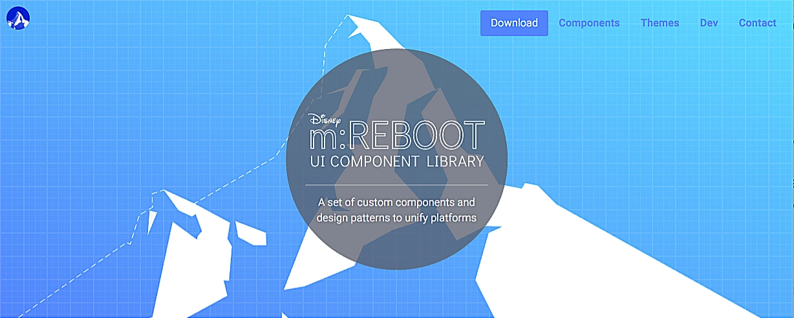
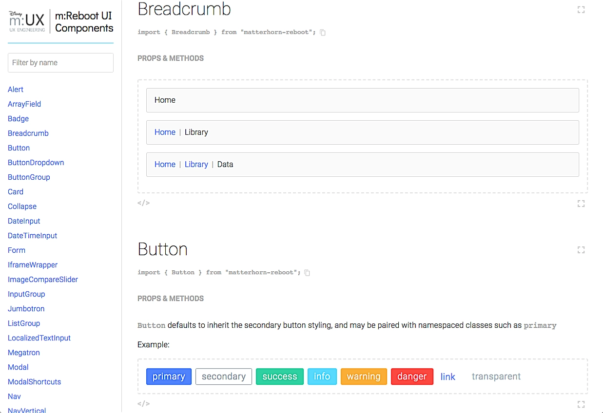
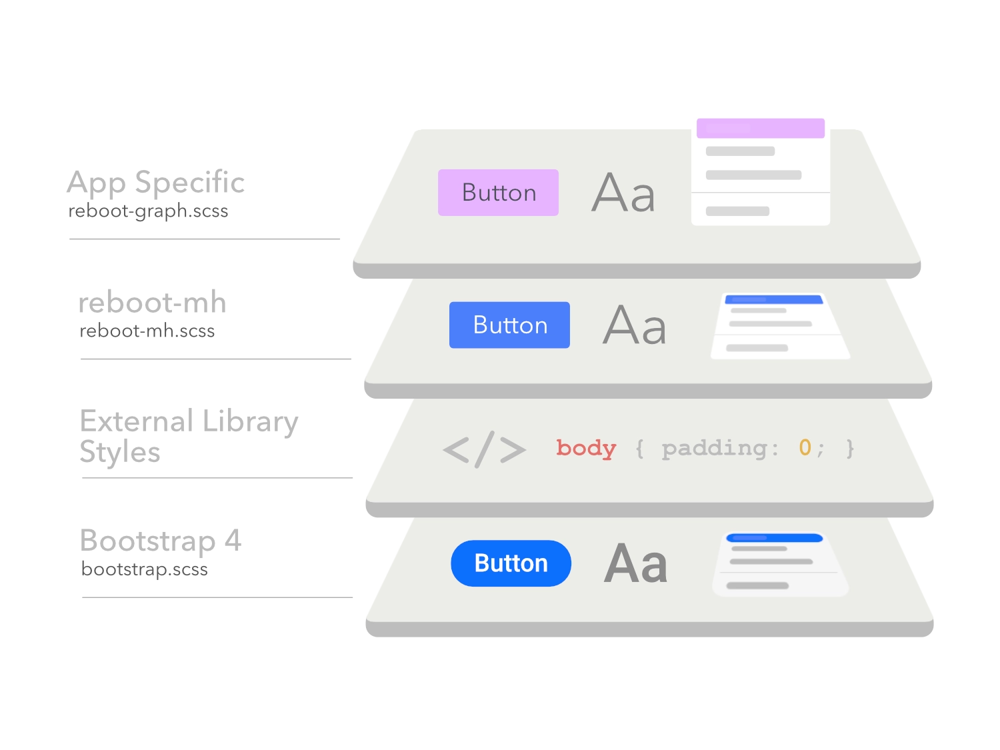
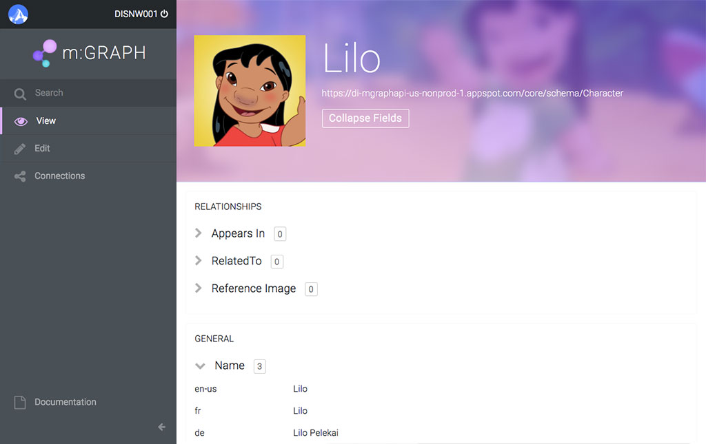
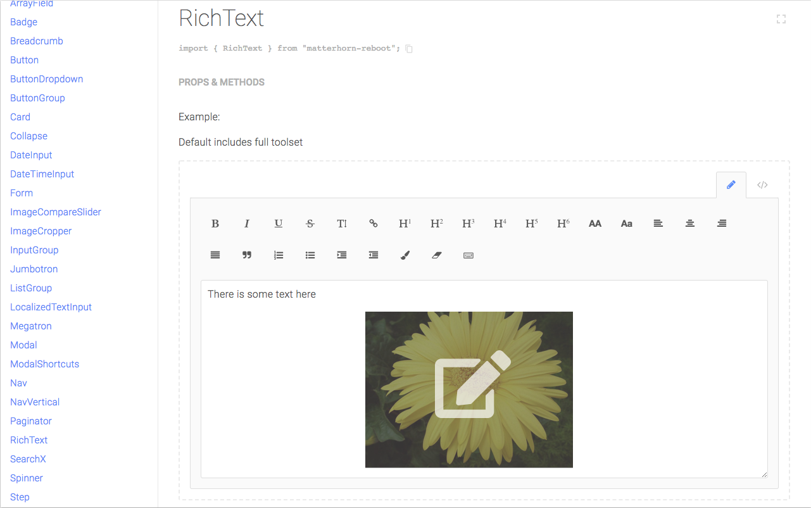
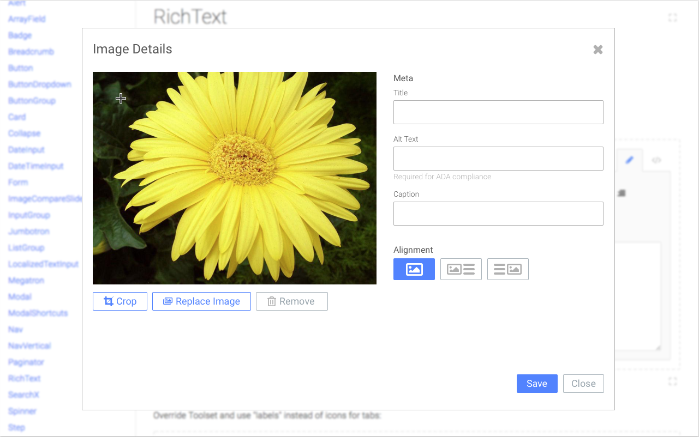

m:UX

I established and led m:UX Engineering (from Matterhorn, the modular CMS + frontend platform), a team of designer/coders developing a common design system to power Disney's portfolio of sites.
Internal tools were often built independently, creating duplicated effort and inconsistent experiences. m:UX created a common layer known as m:Reboot that could scale across products and backend touchpoints. The ShopDisney effort had introduced middleware to separate shared backend services from individual frontends, and m:UX applied that same architectural thinking to the backend service interfaces.


Designing for Scale
We designed and developed a component library that combined custom React components with proven Bootstrap patterns. It was straightforward for the backend developers to adopt and implement, and had configurable theming, allowing each internal product to maintain its own identity.

Leading the Team
I became a people manager, leading a team of 3 while continuing to contribute hands-on to the architecture, design, and implementation. After years of learning to build scalable systems, I was now responsible for guiding other designers and developers in creating them.
Takeaways
m:UX shifted my perspective from designing individual experiences to considering the broader ecosystem in which they exist. Building for producers, admins, and developers made me think beyond the immediate interface to the systems, dependencies, and people that shape the experience. That perspective has stayed with me through Apple, where cohesive experiences span products, hardware, software, and the teams building them.

